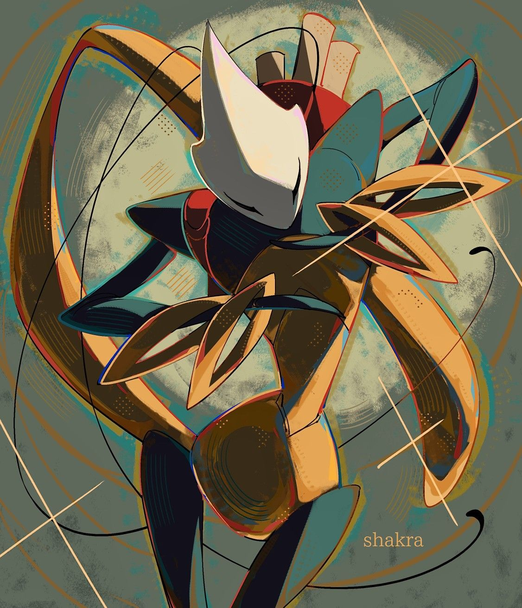
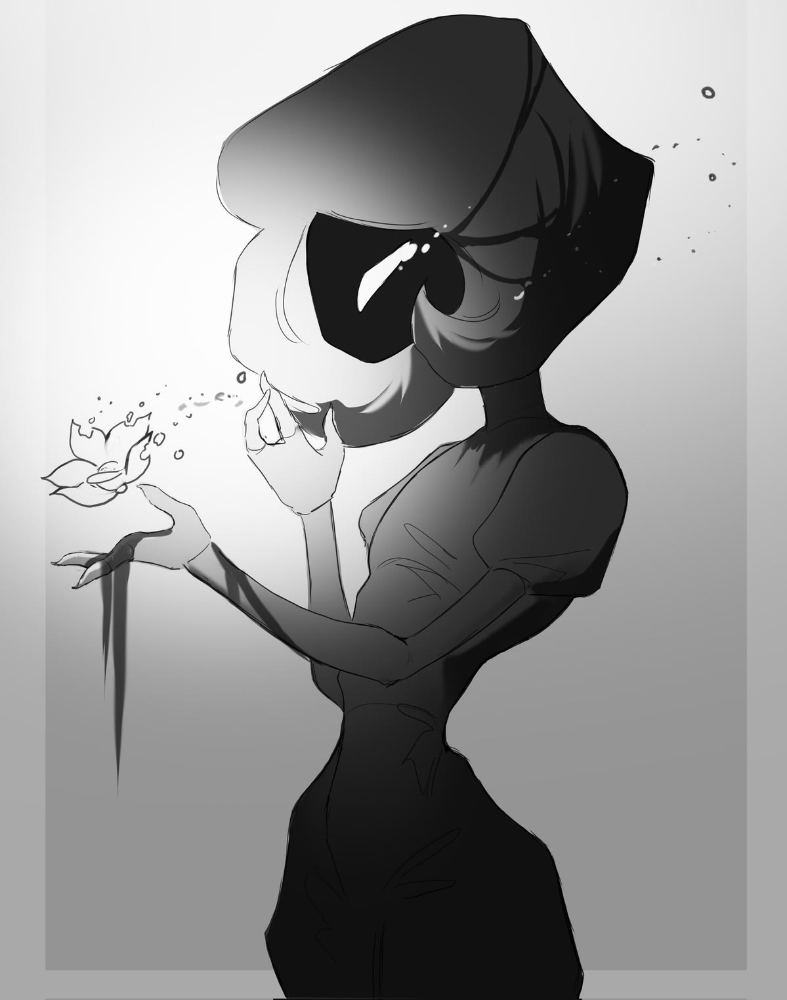
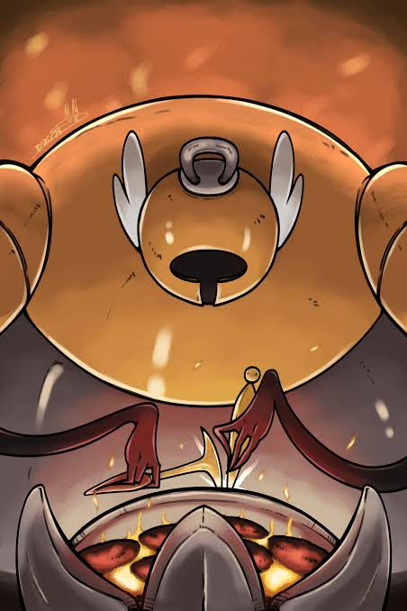
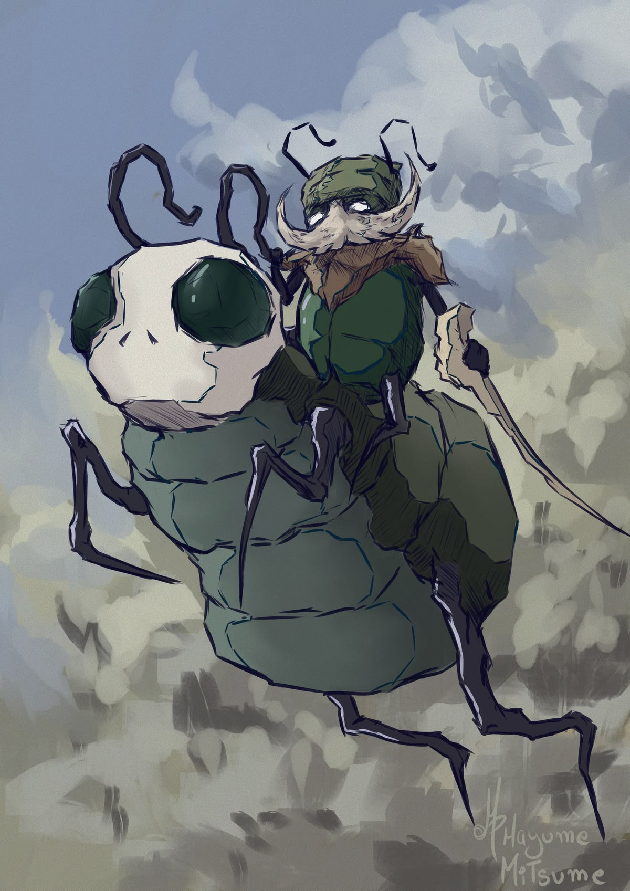
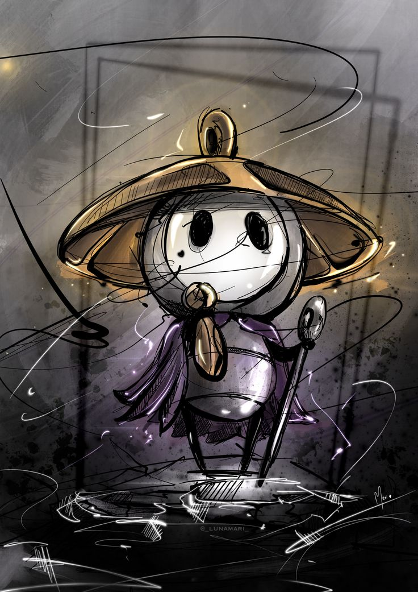

Есть в этих землях одна воительница, чей путь начался задолго до падения Халлоунеста. Хорнет... Дочь Бледного Короля и Херры Зверя, правительницы Глубинного гнезда. Говорят, её рождение стало частью давнего соглашения: Херра согласилась погрузиться в вечный сон и стать одной из Грезящих, но взамен пожелала получить наследницу. Так появилась на свет маленькая принцесса, связанная кровью с двумя столь непохожими правителями. Один стремился сохранить своё Королевство навеки, другая согласилась пожертвовать собственным пробуждением ради его будущего. Странно... Едва родившись, Хорнет уже оказалась частью чужих обещаний и надежд.
Но в отличие от безмолвных Сосудов, созданных Бледным Королём, Хорнет никогда не была пустой. Она обладала собственной волей, разумом и чувствами. Её оружием стали тонкая игла и прочная нить, а жизнь постепенно превратилась в бесконечное странствие среди руин. Когда Чума поглотила Халлоунест, она осталась одной из немногих, кто продолжал сопротивляться её влиянию. Порой Хорнет встречала маленького Рыцаря, прибывшего из далёких земель, и испытывала его силу, словно пыталась понять, достоин ли он того пути, что ожидал его впереди. Быть может, она видела в нём не просто чужака... Ведь их судьбы были связаны ещё до того, как они впервые встретились.
Хорнет пережила гибель великого Королевства, исчезновение Бледного Короля и долгий сон собственной матери. Столько утрат для столь маленького существа... И всё же она не позволила прошлому определить всю её жизнь. В её движениях нет нерешительности, а в словах редко слышится сожаление. Кажется, она давно привыкла идти вперёд, даже когда дорога ведёт в неизвестность. Но однажды ей самой предстоит оказаться далеко от знакомых земель, среди чужих обычаев, незнакомых существ и песен, которых она прежде никогда не слышала. Интересно... Что станет с той, кто столько времени оберегала судьбы других, когда перед ней наконец откроется её собственная?..
Ах, какая же долгая дорога... Столько незнакомых мест, столько удивительных существ! Порой мне даже кажется, что я никогда не доберусь до вершины. Но разве можно жаловаться, когда впереди ждёт столько чудес?
Слышите? Где-то вдали вновь зазвонили колокола... Какой прекрасный звук! Интересно, кто заставляет их петь? Ох, надеюсь, однажды мне удастся это узнать. А пока... пожалуй, стоит продолжить путь. Ведь идти гораздо приятнее, когда есть что напевать!
Ах, Фарлум... Какое же прекрасное у нас королевство! Вы, должно быть, думаете, что оно всегда было таким? Ох, вовсе нет! Говорят, давным-давно эти земли принадлежали самым разным народам. Среди жарких песков Карака возвышались владения могучего Ордена, в зелёных землях Вердании жили собственные обитатели, а по дальним равнинам и охотничьим угодьям странствовали грозные Скарры. У каждого народа были свои обычаи, свои правители и, наверное, свои песни! Подумать только... Когда-то там, где теперь пролегают дороги паломников, могли стоять целые города, о которых мы почти ничего не знаем. Интересно, какими были их жители? Быть может, они тоже мечтали однажды увидеть нечто великое на вершине этих земель...
Но однажды всё изменилось. В Фарлуме появилась удивительная сила — Шёлк, а с ним возвысились и загадочные Ткачи. Ох, какие же чудеса они умели создавать! Говорят, тончайшие нити подчинялись их воле, а мастерство позволяло творить вещи, которых простому жуку и вообразить невозможно. Со временем прежние королевства утратили своё величие, и над разрозненными землями поднялась великая Цитадель. Её высокие залы наполнились голосами, а песни и молитвы стали звучать далеко за пределами её стен. Правда, я никогда не встречал самих древних Ткачей. Странно... От столь могущественного народа осталось немало следов, но так мало тех, кто мог бы рассказать о нём. Хм... Наверное, даже величайшие мастера однажды заканчивают свою работу и отправляются куда-нибудь дальше.
Так постепенно возник тот Фарлум, который мы знаем сегодня. Королевство шёлка, колоколов и священных песен! Над старыми землями протянулись новые дороги, появились поселения, а множество существ обратило свои взоры к сияющей Цитадели. Говорят, прежде её хоры никогда не умолкали и всё королевство словно дышало в такт единой мелодии. Как бы мне хотелось хоть раз услышать такое чудо! Правда, сейчас некоторые из тех дорог опустели, а прекрасные залы древних построек давно погрузились в тишину. Но ведь всё, что однажды было создано с такой любовью, не может исчезнуть бесследно... Верно? Быть может, однажды над Фарлумом снова раздастся та самая песня, которую помнили наши далёкие предки...
Высоко-высоко, над всеми дорогами Фарлума, возвышается великая Цитадель. Ах, сколько прекрасных историй я о ней слышал! Говорят, за её величественными вратами находятся сияющие залы, украшенные золотом и тончайшим шёлком, а голоса бесчисленных певчих сливаются в одну чудесную мелодию. Именно туда стремятся паломники со всего королевства. Мы верим, что каждый, кто пройдёт свой путь с чистым сердцем, однажды будет вознаграждён за все испытания. Ох, как же мне хочется оказаться среди тех счастливцев! Представляете, после долгих странствий наконец услышать песню, ради которой столько времени шёл вперёд... Я бы, наверное, даже забыл слова собственной молитвы от волнения!
Впрочем, паломничество — дело совсем не простое. Наши дороги пролегают через мрачные пещеры, холодные перевалы и бескрайние поля, где не всякому удаётся найти безопасный ночлег. Паломникам не полагается полагаться на оружие: вера, молитва и песня должны помогать нам преодолевать трудности. А ещё на пути стоят древние святилища с колоколами, чей звон сопровождает наше восхождение к великой Цитадели. Ах, какие замечательные звуки! Я всегда беру с собой свою счастливую погремушку. Конечно, от диких зверей она едва ли защитит... Зато как приятно бывает услышать знакомый звон после долгой дороги! Порой я встречаю других паломников. Некоторые едва держатся на ногах, другие уже почти не разговаривают. Бедняги... Наверное, испытания оказались для них слишком тяжёлыми. Но я стараюсь подбодрить их песней. Ведь вместе идти всегда легче, правда?
Говорят, прежде множество паломников достигало Цитадели, где их встречали священные хоры и великие служители. Каждый надеялся обрести там покой, исцеление или ответ на молитву, которую нёс в сердце всю дорогу. Но теперь от тех, кто поднимается к вершине, редко приходят вести. Некоторые даже утверждают, что никто не возвращается оттуда вовсе... Ох, какие печальные мысли! Быть может, им просто настолько хорошо в сияющих залах, что они предпочитают остаться там навсегда? Я бы хотел в это верить. И всё же иногда, когда колокола затихают, мне становится немного не по себе. Столько существ отправилось на эту священную дорогу... Интересно, все ли они нашли то, ради чего начали свой путь?..
Есть, однако, нечто, о чём жители Фарлума предпочитают говорить вполголоса. Наваждение... Ох, даже произносить это слово неприятно! Говорят, когда-то наше королевство было совсем иным. Дороги полнились путешественниками, колокола созывали верующих, а над поселениями раздавались песни. Но затем с обитателями стали происходить странные вещи. Одни слышали зов, которому не могли противиться, другие теряли рассудок и начинали нападать даже на тех, кого прежде называли друзьями. Некоторые словно переставали владеть собственными телами, будто невидимые нити направляли каждое их движение. Какая ужасная участь... Я всегда думал, что песня должна приносить утешение. Но что, если однажды знакомая мелодия заставит тебя забыть собственный голос?..
Постепенно Наваждение распространилось по всему Фарлуму. Прежде безопасные дороги стали опасными, многие поселения опустели, а даже самые мирные существа начали внушать страх. Говорят, особенно сильно бедствие затронуло великую Цитадель. Её прекрасные хоры умолкли, и оттуда перестали приходить вести. Странно... Ведь именно там, на самой вершине, должно было находиться спасение для всех страждущих! Некоторые путники утверждают, что проклятие связано с самим Шёлком, которым пронизано наше королевство. Будто древние нити до сих пор хранят чью-то волю и способны подчинять себе живых существ. Ох, не знаю, стоит ли верить таким рассказам... Шёлк ведь столько времени служил Фарлуму! Разве может нечто столь прекрасное стать причиной таких страданий?
И всё же даже теперь паломники продолжают своё восхождение. Кто-то надеется избавиться от болезни, кто-то ищет пропавших близких, а кто-то просто верит, что на вершине его ждёт ответ. Я тоже продолжаю путь. Конечно, иногда мне бывает страшно... Особенно когда из тёмных проходов доносится странное пение, а знакомые лица вдруг перестают узнавать меня. Но ведь нельзя отворачиваться от тех, кому нужна помощь! Быть может, если мы будем держаться вместе, наши голоса окажутся сильнее этого ужасного Наваждения. Только вот одна мысль никак не даёт мне покоя... Если само королевство зовёт нас к Цитадели, почему дорога к ней полна тех, кто, кажется, уже не способен услышать ничего, кроме этого зова?..
Ох, чуть не забыл рассказать об одной необыкновенной путешественнице! Совсем недавно в Фарлуме появилась воительница из далёкого королевства. Хорнет... Высокая, ловкая, в красном плаще, с длинной иглой и тонкой нитью. Признаться, прежде мне не доводилось встречать никого подобного! Но самое странное — она вовсе не собиралась приходить сюда по собственной воле. Говорят, загадочные служители Цитадели отправились далеко за пределы наших земель и привезли её в особой клетке, покрытой древними знаками. Зачем кому-то понадобилось пленять столь удивительное существо? Неужели нельзя было просто пригласить её в гости? Впрочем, сомневаюсь, что она приняла бы подобное приглашение... Кажется, эта воительница не из тех, кто охотно оставляет родные земли.
К счастью, Хорнет сумела освободиться ещё до того, как её доставили к месту назначения. Её путь начался глубоко внизу, среди заросших мхом пещер, откуда предстояло подниматься через всё Королевство. Вскоре стало ясно, что незнакомка стремится к той же великой Цитадели, что и мы, паломники. Правда, причины у неё совсем другие. Она хочет узнать, кто приказал похитить её и почему ради этого пришлось пересечь столь далёкие земли. Говорят, искусство Хорнет каким-то образом связано с древними Ткачами, чьи тайны до сих пор скрыты в глубинах Фарлума. Удивительно... Неужели наша новая гостья имеет отношение к народу, исчезнувшему столько лет назад? Быть может, именно поэтому её здесь и ждали. Ох, сколько же загадок окружает эту красную воительницу!
Мне доводилось встречать Хорнет на дорогах Фарлума. Она кажется суровой и редко задерживается ради пустых разговоров, но, знаете, я вовсе не думаю, что у неё недоброе сердце. Напротив, порой она замечает чужую беду там, где другие предпочитают пройти мимо. И всё же мы смотрим на наше королевство совсем по-разному. Я слышу в далёком звоне колоколов обещание прекрасного будущего, а она словно пытается разобрать в нём какое-то предупреждение. Странно... Может быть, чужестранцу легче увидеть то, к чему мы сами давно привыкли? Хм... Не хотелось бы думать, что всё, во что я верил, оказалось совсем не таким, каким представлялось. Но если Хорнет действительно сумеет добраться до вершины и узнать правду о Фарлуме, я надеюсь, её путешествие принесёт нам не только ответы, но и немного надежды. Ведь даже самый долгий и печальный путь должен однажды привести к чему-нибудь хорошему... Правда?..

«Ох, как же приятно встретить на незнакомой дороге кого-нибудь, кто знает, куда она ведёт! Особенно если этот кто-нибудь — Шакра. Удивительная воительница... Она странствует по всему Фарлуму, составляя карты самых запутанных его уголков. Говорят, её народ славится искусством боя, а сама Шакра управляется со своими острыми кольцами так ловко, что даже самые опасные существа предпочитают не вставать у неё на пути. И всё же вместо того, чтобы искать сражений, она тратит столько времени на изучение старых троп. Подумать только... Сколько дорог можно нанести на карту за одну жизнь!
Но, кажется, Шакра путешествует вовсе не ради карт. Когда-то у неё был наставник, исчезнувший при загадочных обстоятельствах. С тех пор она ищет его следы среди пещер и разрушенных поселений Фарлума. Иногда мне кажется, что за её суровым взглядом скрывается куда больше тревоги, чем она готова показать. Бедняжка... Наверное, очень тяжело искать того, кто когда-то указывал тебе дорогу. Надеюсь, однажды она найдёт своего учителя. Ведь даже самому искусному картографу порой нужно, чтобы кто-нибудь помог ему отыскать путь домой...»
«Есть в Фарлуме одна необыкновенная воительница, о которой мне доводилось слышать немало странных историй. Лэйс... Такая изящная, такая уверенная в себе! Она обращается со своей золотистой иглой так легко, словно не сражается вовсе, а исполняет какой-то причудливый танец. Ох, как бы мне хотелось обладать хотя бы малой частью подобного мастерства! Хотя, признаться, встречаться с ней на узкой тропе я бы всё-таки не решился. Уж слишком весело она улыбается при виде опасности. Странно... Разве может битва приносить кому-нибудь столько удовольствия?
Похоже, особенный интерес у Лэйс вызывает наша чужестранка Хорнет. Они встречаются на дорогах Фарлума, и всякий раз их разговоры быстро превращаются в испытание силы и ловкости. Но отчего Лэйс так настойчиво ищет этих встреч? Быть может, ей просто хочется найти достойную соперницу... Или за её весёлыми насмешками скрывается причина, о которой она предпочитает молчать. Хм... Надеюсь, однажды им удастся поговорить без оружия. Ведь даже между самыми непримиримыми соперниками порой может возникнуть настоящее понимание... Правда?»


«Глубоко под дорогами паломников, среди раскалённых печей Глубоких доков, живёт удивительная мастерица. Дочь Кузни! Ох, какое же необычное имя... Да и сама она совсем не похожа на тех кузнецов, которых мне доводилось встречать. Говорят, её ремесло передавалось из поколения в поколение, а искусство обработки металла известно далеко за пределами доков. Среди жара и тяжёлого грохота она создаёт удивительные инструменты, которым найдётся применение даже в самых опасных странствиях. Должно быть, нелегко трудиться в таком пекле! Я бы, наверное, и нескольких минут там не выдержал...
А ведь Глубокие доки нынче совсем не то место, каким были прежде. Многие работники утратили рассудок, старые механизмы продолжают грохотать среди опустевших проходов, но огонь в кузне всё ещё горит. И Дочь Кузни по-прежнему занимается своим делом, словно ничто не способно отвлечь её от работы. Удивительно, правда? Иногда я думаю, что именно такие существа и не дают нашему Королевству окончательно погрузиться во тьму. Пока кто-нибудь продолжает создавать что-то новое, разве можно сказать, что всё уже потеряно?..»
«Ах, какие же славные путешественники встречаются на дорогах Фарлума! Вот, например, Гармонд и его верный спутник Заза. Первый — старый рыцарь с гордым сердцем и не менее гордыми речами, а второй — необыкновенное существо, которое носит своего товарища на спине. Ох, до чего же забавная пара! Гармонд любит рассказывать о славных подвигах и рыцарской чести, а Заза обычно предпочитает молчать. Хотя, признаться, порой мне кажется, что именно он лучше всех понимает, куда следует идти. Как хорошо, должно быть, иметь рядом друга, с которым можно разделить даже самую трудную дорогу!
Говорят, они странствуют по Фарлуму в поисках нового дома. Странная цель для рыцаря, не правда ли? Ведь многие отправляются в путь ради славы, сокровищ или великих свершений. А эти двое ищут всего лишь место, где смогут однажды остановиться. Но, быть может, в этом и заключается настоящая мудрость. Что толку в бесчисленных победах, если после них некуда возвращаться? Ох... Надеюсь, Гармонд и Заза всё-таки найдут свой дом. И когда это случится, я непременно загляну к ним в гости! Если, конечно, моя собственная дорога когда-нибудь приведёт меня обратно...»


«Ох, обо мне вы тоже хотите узнать? Как неожиданно! Боюсь, моя история совсем не такая удивительная, как у остальных. Меня зовут Шерма, и я всего лишь маленький паломник, стремящийся к великой Цитадели. Я не умею сражаться, как Шакра, и уж точно не способен так ловко обращаться с иглой, как Хорнет. Зато я знаю несколько хороших песен! А ещё у меня есть верная погремушка, которая не раз помогала мне сохранить бодрость духа в самых мрачных местах. Конечно, иногда я пугаюсь... Особенно когда впереди слышатся незнакомые шаги. Но ведь храбрость, наверное, не в том, чтобы никогда ничего не бояться, верно?
Я давно мечтаю добраться до вершины Фарлума и услышать священные песни великой Цитадели. Столько дорог осталось позади, столько удивительных существ встретилось мне по пути... И всё же самое прекрасное, должно быть, ещё впереди! Иногда мне кажется, что я слишком мал для столь долгого путешествия. Что мои молитвы теряются среди бесчисленных голосов других паломников. Но потом я вновь слышу знакомый звон своей погремушки, вспоминаю друзей, встреченных на дороге, и страх понемногу отступает. Быть может, я никогда не совершу великого подвига и моё имя не останется в старых преданиях... Но если моя песня однажды поможет хотя бы одному усталому путнику продолжить дорогу, разве этого будет недостаточно?..»